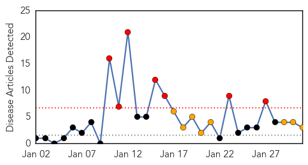
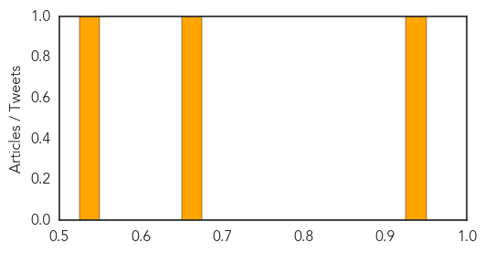
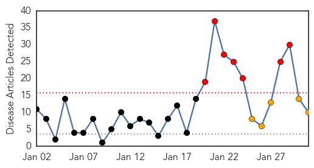
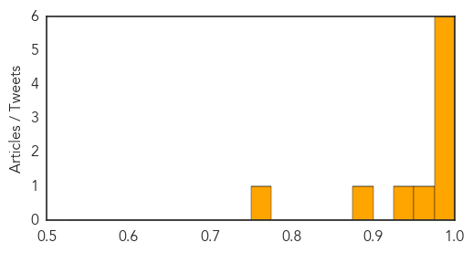

Cholera
30-Day Web Trend
7 alerts, 8 warnings

30-Day Twitter Trend
1 alerts, 0 warnings

Article Locations
Article Confidences
Top Articles:
Top Tweets:
-
No tweets found for Jan 31, 2015
Swine Flu
30-Day Web Trend
7 alerts, 5 warnings

30-Day Twitter Trend
0 alerts, 0 warnings

Article Locations

Article Confidences
Top Articles:
- 1.000
- Delhi: Over 400 swine flu cases in January
- 0.999
- Over 400 swine flu cases recorded in a month
- 0.994
- District on high alert after first swine flu death; 'crisis ward' set up
- 0.981
- ‘Educate people, but don’t make them panic’
- 0.976
- 2 more H1N1 cases in Chandigarh
- 0.975
- Can homeo medicine stave off swine flu?
- 0.961
- Two more test positive for swine flu in city
- 0.949
- Emergency meeting over H1N1 virus by doctors in Rajkot today
- 0.890
- Team to leave today for swab test training
- 0.755
- Guru Tegh Bahadur Hospital: Lack of medical kit at GTB fuels H1N1 fear: Basic life-saving drugs unavailable
Top Tweets:
-
No tweets found for Jan 31, 2015